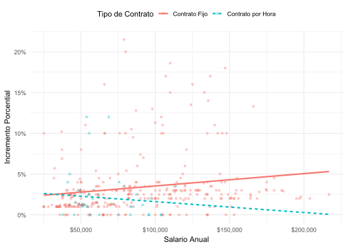
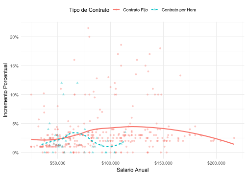
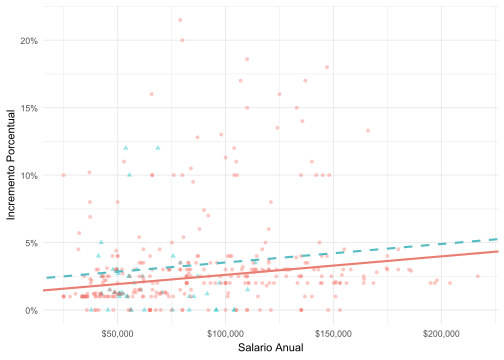
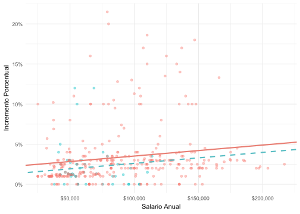

# A tibble: 409 × 4
incr_porcentual tipo_contrato salario_anual nivel_performance
<dbl> <chr> <dbl> <fct>
1 1 Contrato Fijo 25000 Bueno
2 1 Contrato Fijo 25000 Normal
3 1 Contrato Fijo 25000 Bueno
4 1 Contrato por Hora 33987. Normal
5 NA Contrato por Hora 34798. Bueno
6 NA Contrato por Hora 35360 <NA>
7 NA Contrato por Hora 37440 <NA>
8 0 Contrato por Hora 37814. <NA>
9 4 Contrato por Hora 41101. Excelente
10 1.2 Contrato por Hora 42328 <NA>
# ℹ 399 more rowsAnalítica de los Negocios
Parcial II
Antes de empezar a resolver el parcial, lea todas las preguntas y, de acuerdo a su criterio, abra las diapositivas y scripts que considere útiles. Nadie debería tener abierto el correo luego de 5 minutos a menos que sea para enviar el parcial con todas las respuestas. El uso de ChatGPT (o cualquier otra plataforma de IA) no está permitido. Todas las respuestas deben ir en un documento PDF creado en Quarto o en un R Script con las respuestas como comentarios. Como se mencionó anteriormente, aquellos que entreguen las respuestas en Quarto recibirán un +0.5 en el parcial.
Para aquellos que van a entregar el documento en Quarto, les sugiero primero escribir el código en un R Script, corroborar que se está ejecutando correctamente y, luego, pasar las respuestas al documento .qmd. No incluyan el código de las gráficas que utilicen en el documento final; para el resto de las respuestas, es obligatorio incluirlo.
Criterios de evaluación:
✔ Código correcto y bien estructurado: si el código no ejecuta, descuento la mitad del punto.
✔ Gráficos generados correctamente: Uso de ggplot2 con etiquetas claras y colores adecuados.
✔ Interpretación y análisis: Respuesta clara a las preguntas en comentarios y que sea concisa. Si su respuesta tiene más de 3 líneas es muy larga.
✔ Formato y organización: Código limpio, comentado y con títulos adecuados en el documento.
Tienen 2 horas y media para resolver el parcial, por lo que hay tiempo suficiente para acortar cualquier respuesta. Cada punto vale 0,5.
Éxitos!
Contexto
En 2021, Blizzard Entertainment inició un proyecto de análisis de datos sobre los aumentos salariales de sus empleados. Esto fue en respuesta a las crecientes preocupaciones sobre prácticas de compensación en la industria de videojuegos, desencadenadas por un archivo de Excel anónimo que revelaba salarios internos. El objetivo era identificar posibles disparidades en los ajustes salariales entre diferentes grupos de empleados y niveles de desempeño (Fuente: Blizzard Workers Share Salaries in Revolt Over Pay).
Suponga que usted hace parte de este equipo. El nombre de los datos que usarán para este análisis es blizzard_salary y las variables relevantes son:
incr_porcentual: Aumento dado en julio de 2020, como incremento porcentual con valores entre 1 (aumento del 1%) al 21.5 (incremento del 21.5%)tipo_contrato: Tipo de contrato, con las categoríasContrato por HorayContrato Fijosalario_anual: Salario anual, en doláres (USD), con valores entre $25,000 y $216,856.nivel_performance: El nivel de la revisión del desempeño más reciente, con categoríasMalo,Normal,Bueno, yExcelente.
Las diez primeras filas de los datos blizzard_salary son las siguientes:
Preliminares
Carguen los paquetes tidyverse, broom y glance. Además, carguen los datos con el siguiente nombre:
blizzard_salary <- read.csv("blizzard_salary.csv")Pregunta 1
Una de las variables de interés es el incremento salarial que recibieron los trabajadores. Examinemos cómo se distribuye la variable incr_porcentual. Grafiquen un diagrama de caja para esta variable y mencionen dos observaciones concretas sobre el comportamiento de su distribución.
Pregunta 2
Supongamos que uno de sus compañeros escribió un código como parte de su análisis de los datos para analizar la tendencia central de los salarios por tipo de contrato. Luego imprimió los resultados que se muestran a continuación. Desafortunadamente, el valor indicado con _____ se borró de la impresión.
# A tibble: 2 x 3
tipo_contrato salario_anual_promedio salario_anual_mediana
<chr> <dbl> <dbl>
1 Contrato Fijo 90472. 83381
2 Contrato por Hora 63003. _____¿Cuál de los siguientes valores es el mejor estimado para el número faltante? Reescriban el código que utilizó su compañero para llegar al valor.
- 30,000
- 50,000
- 80,000
- 100,000
Pregunta 3
¿Cuál de las distribuciones de salario anual tiene una desviación estándar mayor?
- Trabajadores con nivel bueno en su performance
- Trabajadores con nivel malo en su performance
- Más o menos tienen la misma
Luego de obtener el resultado en R, expliquen por qué tiene sentido que ese grupo tenga una mayor, menor o igual desviación estándar en los salarios.
Pregunta 4
Creen una nueva variable aumento que sea el incremento en el salario que tendrían los trabajadores luego de 2020 (Se multiplicaría el salario anual por(incr_porcentual/100)). Uno de sus colegas le pide graficar la dispersión entre las variables aumento y salario_anual. ¿Cuál sería su conclusión sobre la relación entre el salario base y el incremento basándose en la gráfica?
Pregunta 5
El jefe del equipo de trabajo sugiere que los salarios anuales (salario_anual) son el primer predictor de los incrementos (incr_porcentual). El modelo aumento_1 estima la siguiente ecuación:
\[\widehat{\text{Incremento Porcentual}}=\hat{\beta_0}+\hat{\beta_1}\times \text{Salario Anual}\]
¿Cual de las siguientes interpretaciones es la mejor para el coeficiente de la pendiente?
- Por cada $1,000 de salario anual, el modelo predice que el aumento salarial será mayor por 1.59% en promedio.
- Por cada $1,000 de salario anual, el aumento salarial sube por 0.0159%.
- Por cada $1,000 de salario anual, el modelo predice que el aumento salarial será mayor por 0.0159% en promedio.
- Por cada $1,000 de salario anual, el modelo predice que el aumento salarial será mayor por 1.83% en promedio.
Pregunta 6
Evalúen con una prueba de hipótesis si el coeficiente \(\hat{\beta_1}\) de la regresión del punto 5 es estadísticamente diferente de 0.
Pregunta 7
Seleccione una condición (linealidad, varianza constante o normalidad de los errores) y analice si el modelo aumento_1 la cumple, utilizando gráficas para justificar su respuesta.
Pregunta 8
Dos de sus colegas proponen dos modelos diferentes para predecir incr_porcentual. El primer modelo, al que llaman modelo_1, hace la estimación usando salario anual y una variable dummy si el trabajador tiene un contrato fijo de la siguiente manera:
\[\widehat{\text{Incremento Porcentual}}=\hat{\beta_0}+\hat{\beta_1}\times \text{Salario Anual}+\hat{\beta_2}\times \text{Contrato Fijo}\]
Por otro lado, el segundo modelo llamado modelo_2, utilizaría variables dummy para las categorías de nivel_performance estimando:
\[\begin{align*} \widehat{\text{Incremento Porcentual}} =\ & \hat{\beta_0} + \hat{\beta_1} \times \text{Salario Anual} + \hat{\beta_2} \times \text{Malo} \\ & + \hat{\beta_3} \times \text{Normal} + \hat{\beta_4} \times \text{Excelente} \end{align*}\]
¿Cuál de los dos modelos elegiría usted y cuál sería su criterio?
Pregunta 9
# A tibble: 5 × 5
term estimate std.error statistic p.value
<chr> <dbl> <dbl> <dbl> <dbl>
1 (Intercept) 3.52 0.515 6.84 5.01e-11
2 salario_anual 0.0000102 0.00000443 2.30 2.20e- 2
3 nivel_performanceMalo -4.07 1.42 -2.86 4.55e- 3
4 nivel_performanceNormal -2.40 0.397 -6.03 5.12e- 9
5 nivel_performanceExcelente 2.99 0.714 4.19 3.77e- 5Cuando uno de sus colegas ve el resultado de la estimación, comenta: ‘El coeficiente para nivel_performanceNormal es negativo, ¡qué raro! Supongo que significa que las personas con desempeño Normal reciben un aumento menor.’ ¿Es correcto su comentario? Si no lo es, expliquen por qué.
Pregunta 10
# A tibble: 3 × 5
term estimate std.error statistic p.value
<chr> <dbl> <dbl> <dbl> <dbl>
1 (Intercept) 2.12 0.470 4.51 0.00000855
2 salario_anual 0.0000141 0.00000470 2.99 0.00294
3 tipo_contratoContrato por Hora -0.900 0.544 -1.65 0.0993 ¿Cuál de las siguientes gráficas explica el modelo estimado? Explique su respuesta.



